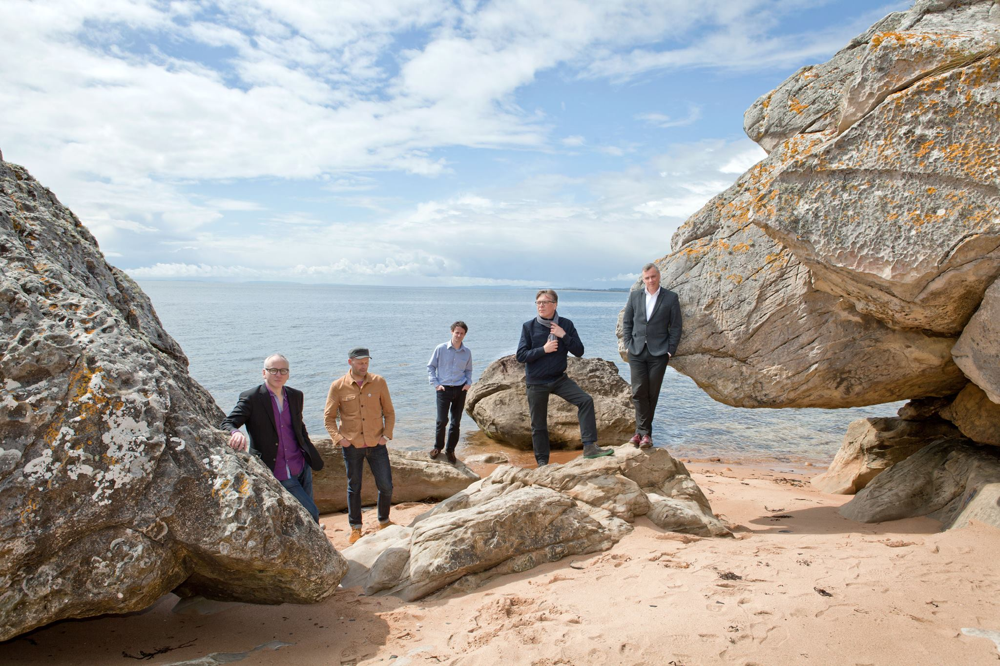

| Teenage Fanclub are Here with new single I'm In Love 22 June 2016 |
|  |
Once named the second best band in the world by Liam Gallagher, Scotland’s finest alt rockers Teenage Fanclub have announced their tenth album ‘Here’ with the first single I’m In Love. Full of their trademark charm, the track feels airy and carefree as it bounces and jangles around, embracing a playful maturity that feels remarkably fresh for a band nearly thirty years in their prime. And like with many songs in the Teenage Fanclub catalogue, I’m In Love features impeccable songwriting while remaining effortless in execution as the band gel together without a wasted second. As an opening track, I’m In Love is also a perfect first taste after six years since their last album, reminding us why they’ve stuck around for so long. Teenage Fanclub’s tenth album ‘Here’ will be in your ears 9 September 2016 through PeMa Records. |